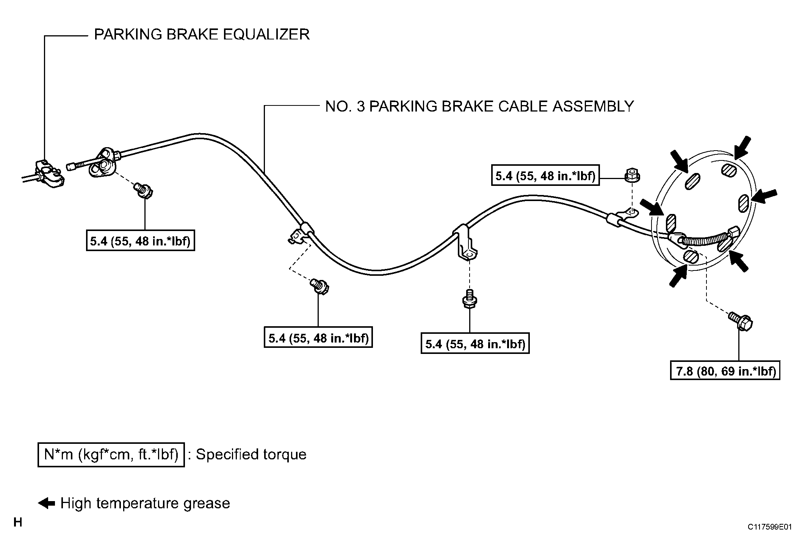

Home
>>
Scion
>>
2006
>>
xB Standard
>>
Repair and Diagnosis
>>
Brakes
>>
Parking Brake System
>>
Parking Brake
>>
Parking Brake Cable
>>
Components
Parking Brake Cable: Components
Fig 1: Identifying Parking Brake Cable Components

Courtesy of © TOYOTA, LICENSE AGREEMENT TMS1002